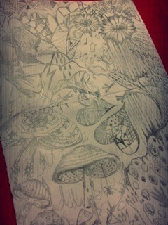
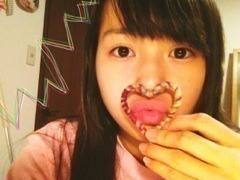

| 2012/09 26 Wed | 241回目*marika |
いつも読んでくださってる方、
初めて読んでくださった方、
コメントしてくださった方、
ありがとうございます！
べ。

わーせっちゃんに
盗撮されてたー笑
あれはひめかのケータイね！
たぶんメンバーのおもしろ写真見てて
にやけてたんだと思う笑
今日は朝学校行く前に走ったよ

目がパチっとしたよ！
明日も走る！
...
席替えのくじの紙が大きかったから
裏にぐちゃぐちゃ描いた。わお！
番号は2番でした
 前...
前...
前...

きのこ好きすぎる。
このフォルム。
食用はだめだけど←
立体のカラフルな
きのこのぬいぐるみとか
あればいいのに...
**********
 同じ誕生日なわけですが、
同じ誕生日なわけですが、
まりかのお兄ちゃんってこと
でいいかな？
 んじゃ、ななみの
んじゃ、ななみの
お兄ちゃんにもなるね

好きな冷食は？
冷食は食べない派
 つけ襟って自分でやったの？
下北の古着屋で買ったよ
つけ襟って自分でやったの？
下北の古着屋で買ったよ

ボロボロのワイシャツがあるから
自分でも作ってみようと思う！
キャンドルはつける派???
飾っとく派???
普段は飾ってるよー
でも、リラックスしたい時つける

本読む？
最近読んでないな。
なんか、難しい本読んでみようかな。
部屋のカーテンって何色ですか？
私の部屋は窓がちっちゃいので、
ぶ厚いカーテンはありません。
薄い白色です♪
かわいいレースのカーテンがあれば
変えたいな！
新幹線は誰の隣だった？
さゆにゃんとまあやに挟まれた
 最後の2枚はスッピン？
です。
なんで女の子なのに、
最後の2枚はスッピン？
です。
なんで女の子なのに、
スウェットパンツなんて
言葉を知ってんの？
えー知ってるよー！
グレーのスウェットロンスカ
持ってるから、シルエットが
きれいなパンツも
欲しかったりします

最近話題のﾀｲｶﾞｰｺﾍﾟﾝﾊｰｹﾞﾝって
知ってる？
調べたら、かわいい雑貨
いっぱいだた‼

黒かベージュか白か、
ハイカットかローテクスニーカーか、
迷ってるんです(´･_･`)
初心者にはどれがいちばん
使い回せますかね？
ハイカット黒のスニーカー
持ってるけど何にでも
合わせやすいし、便利だよ！
ただ、みんな持ってるんだよね

ナチュラル系が好きなら
白やベージュもかわいいと思います。
ローカットで、明るい靴下見せたら
かわいいだろうな

ビッグライトとスモールライトが
あったら、どっちを使う？？
アリエッティの生活に憧れてるから
一度小人になってみたい。
あ、でも虫が...ひぃ
**********
あ、最近の映画鑑賞。
「ロックンロールは鳴り止まないっ」
「ヒミズ」を鑑賞しました。
スカッ！ざわっ！
はあ...

ノートうつしがんばろ！
ではみなさんおやすみなさい

まりか
コメント(150)
2012/09/26 21:54